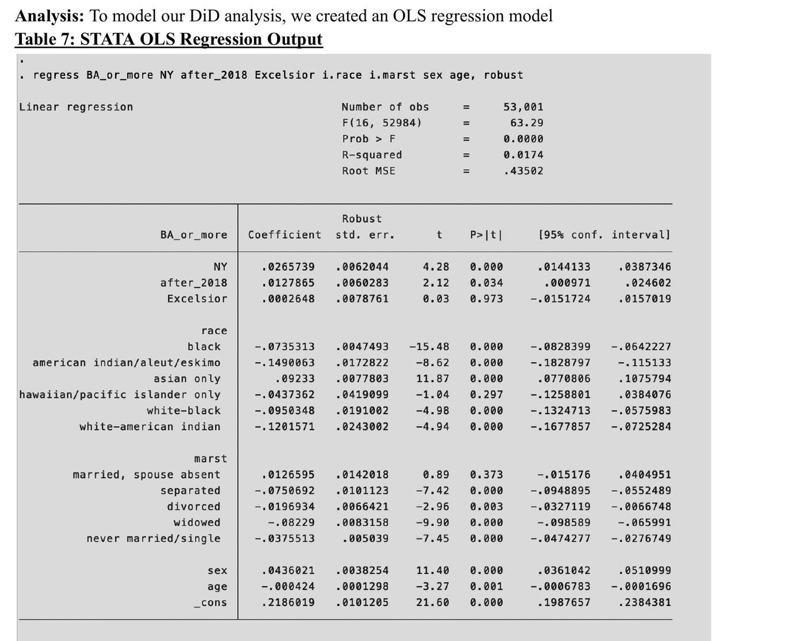
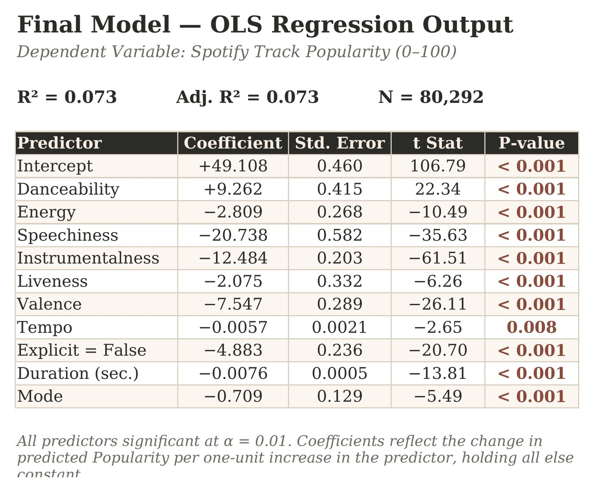

I'm a first-generation student pursuing a Master's in Business Analytics at Wake Forest University, following a B.A. in Economics and Sociology that I completed despite the heavy time commitments as a college cheerleader (3.94 GPA, Magna Cum Laude).
My professional and academic background seamlessly blends quantitative and qualitative research. My projects and research assistantship allow me to answer technically complex problems through statistical and econometric modeling in Python, Excel, Stata, Java, or R — yet never without asking the right questions to think critically and decipher sociological context.
I believe language is our greatest gift! I'm a native Spanish speaker, proficient in Italian, with excellent English communication skills. I'm a writer, a cheerleader, and a musician, all of which embed themselves into my professional skillset. I represented a team of 20 iHeartMedia interns in a 30-minute project presentation to a room full of executive and senior VPs — after which my supervisor assured me I'd "be in front of a camera one day."
I'm enthusiastic about exploring roles in analytics and consulting to employ my quick learning, creativity, attention to detail, and strategic thinking.
Dogwood Merit Scholar, Bank of America Leadership Scholarship
Organizations
Alpha Kappa Psi (Business Fraternity), Kappa Beta Gamma Sorority, Coed Cheerleading Team, President of Advocating Reform for Correctional Clients, Wake Radio
Coursework
Econometrics, Statistics, Computer Science, Global Development, Law and Economics, Behavioral Economics, Econometrics for Environmental Economics, Law and Society
GPA
3.94 (Magna Cum Laude)
Web Highlights
📰 "GradTab"
Voted unanimously by Sociology faculty to represent the major in the newspaper's final edition.
🎸 Student Spotlight — WFU Department of Music
Spotlighted for my article published during my internship for the country's largest classical guitar nonprofit, Austin Classical Guitar.
Data Cleaning & Visualization for "Student Mobility and Academic Performance: Evidence from College Students in Peru"
Wake Forest Department of Economics · Dr. Alba-Vivar
Throughout my senior year, I met weekly with Dr. Alba-Vivar, who specializes in development economics, to strengthen my econometric analysis and contribute to two early staged working research papers.
Context
Do transportation disruptions keep students from getting to class? Lima, Peru saw repeated transportation strikes between 2022–2025, offering a natural experiment to test whether commuting shocks affect university attendance.
My Role
Built an original geo-referenced dataset from scratch through news scraping and archival event coding — 1,101 observations across 11 variables, tracking strikes by district and date. Created time-series and choropleth maps in Stata to visualize disruption patterns.
Outcome
Findings supported causal analysis linking commuting shocks to attendance, contributing directly to the research assistantship's published academic work.
Strikes reduced university attendance by 37 percentage points — a substantial, measurable effect linking infrastructure disruption to human capital cost.
Difference-in-Difference Model
NY Excelsior Scholarship: A Difference-in-Differences Policy Analysis
Final Econometrics Project (ECN 209) · OLS Difference-in-Differences Model
Context
New York's Excelsior Scholarship (2017) promised "tuition-free" public college for middle-class families earning under $125,000 — but by the 2018–19 academic year, only 3.8% of SUNY/CUNY students actually used it. I set out to test whether the program meaningfully increased bachelor's degree completion, or whether its restrictive, last-dollar design limited its real-world impact.
My Role
Built a Difference-in-Differences model in Stata comparing New York to Pennsylvania as a control state, using IPUMS CPS microdata (2015–2024, 53,001 observations). Ran an OLS regression on bachelor's degree completion with demographic controls (age, sex, race, marital status), then stress-tested the result with two robustness checks — removing race and removing age as controls.
Outcome
Excelsior's own treatment effect was statistically insignificant (0.03 percentage points, p = 0.97) — even as NY residency alone predicted a 2.7-point higher likelihood of degree completion. The null result calls the effectiveness of last-dollar scholarships into question and suggests stronger, more targeted strategies may be needed.

Excelsior's own effect on degree completion was statistically insignificant (p = 0.97) — despite NY residency alone predicting a 2.7-point higher likelihood of a bachelor's degree. The finding questions whether last-dollar scholarships meaningfully move the needle on statewide attainment.
Multiple Regression Model
What Makes a Spotify Track Popular? A Multiple Regression Analysis
MSBA Statistics for Business Analytics · 3-Person Team Project · Excel & Python
Context
Using a public Spotify audio-features dataset (nearly 114,000 tracks, sourced from Kaggle via Spotify's Web API), our team investigated a core music-industry question: which audio characteristics are actually associated with a track's popularity? After removing duplicate track IDs and popularity outliers, we modeled on roughly 80,000 unique, non-zero-popularity tracks.
My Role
I led the exploratory and regression analysis in Excel and Python — engineering variables (converting duration to seconds, building dummy variables for explicit content and time signature) and running a full correlation matrix to test for multicollinearity, which flagged a strong relationship between energy and loudness (r = 0.76) and energy and acousticness (r = −0.72). I then iteratively built and compared seven candidate models by R² and adjusted R², selecting a final 10-predictor model that resolved the multicollinearity issue while holding every coefficient to a conservative α = 0.01 significance threshold.
Outcome
All 10 predictors were statistically significant at α = 0.01 across 80,292 tracks. Danceability was the strongest positive driver of popularity (+9.26 points per unit), while speechiness, instrumentalness, and valence were the strongest negative drivers — and non-explicit tracks scored about 4.9 points lower than explicit ones, holding everything else constant. With an R² of 0.073, audio features alone explain only a small share of what drives popularity — a limitation I flagged directly rather than overstate, pointing instead to marketing, playlist placement, and artist recognition as likely bigger factors outside the dataset.

Built and compared 7 regression models on 80,000+ real Spotify tracks — isolating danceability as the strongest driver of popularity, with every predictor in the final model significant at α = 0.01.